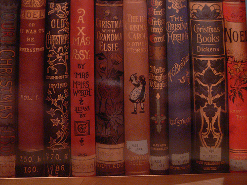

In a time where digital devices impede our imagination, let's pretend.
When I was a young child, my parents, continuing a Christmas morning tradition started by my Grandparents, drew an outline of Santa's Magic Footprints® for us to find. Throughout our early years we would discover the footprints on our front steps, near a doorway entrance, or on the fireplace. We were spellbound! To this day at family holiday gatherings each of my brothers and sisters fondly remember their awe and amazement when they found out that Santa Claus had actually visited our house. We had proof! Many a childhood friend was proudly shown Santa's Magic Footprints® along with the toys we had received on Christmas morning.
We have enhanced this memorable tradition by developing a Premium Reusable Stencil Kit that includes everything you need to create Santa's Magic Footprints®. Our kit includes a premium reusable stencil to create right and left footprints. The stencil is intricately designed with snowflakes and Santa's "Elfin Made" treadmark. An applicator to easily apply flour or carpet cleaner along with a package of "magic" glitter to accent and highlight the footprints are also included. Finally we have included a Santa "Thank You" Note Card for you to personalize for your child on Christmas morning. We at Magic Footprints, Inc. hope Santa's Magic Footprints® begins a family holiday tradition which will form lasting childhood memories for many years to come.
"I'll never forget when Mom & Dad showed me Santa's Magic Footprints® on Christmas Day!"